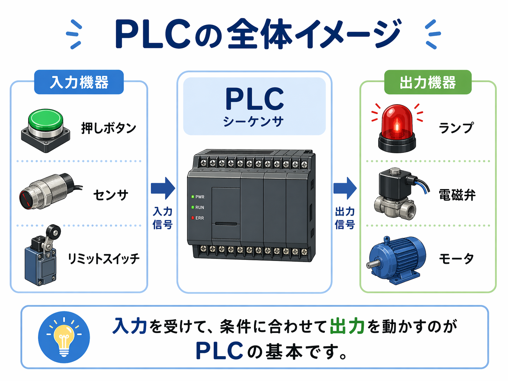
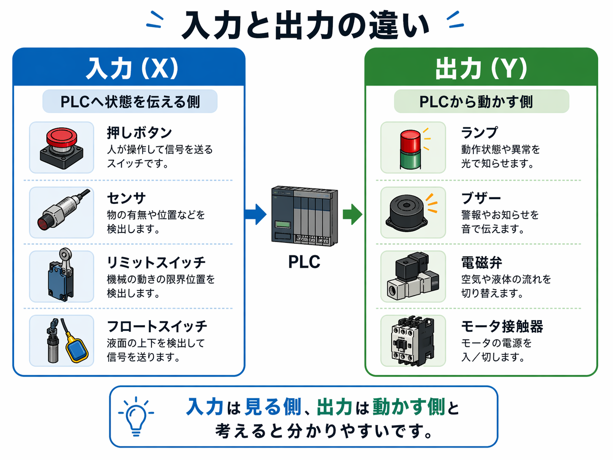

PLCは「入力を受けて、条件に合わせて出力を動かす」ための制御機器です
PLCは、押しボタン、センサ、リミットスイッチなどから入ってくる信号を見て、 その条件に応じてランプ、ブザー、電磁弁、接触器などを動かします。
つまり、現場で起きている状態を入力として受け取り、それをもとに設備側へ出力を返す役目です。 難しく考えすぎず、まずは見ている側が入力、動かす側が出力と考えると整理しやすいです。

入力を見る
押しボタンやセンサなど、PLCへ状態を伝える側です。
PLCで判断する
入ってきた信号をもとに、どの出力を動かすかを決めます。
出力を動かす
ランプ、ブザー、電磁弁、接触器などを動かします。
ラダー図で組む
PLCの動きは、ラダー図で組まれていることが多いです。
入力と出力の違いは「PLCへ伝える側」と「PLCから動かす側」で見ると分かりやすいです
制御を見始めると、入力と出力の考え方で少し迷いやすいです。 ですが、ここはシンプルに整理できます。
- 入力（X）：PLCへ状態を伝える側
- 出力（Y）：PLCから動かす側
押しボタンやセンサは、今どうなっているかをPLCへ伝えます。 逆に、ランプや電磁弁、モータ接触器などは、PLCからの信号で動きます。

入力でよく見るもの
- 押しボタン
- 近接センサ
- リミットスイッチ
- フロートスイッチ
- 各種接点信号
出力でよく見るもの
- 表示ランプ
- ブザー
- 電磁弁
- 接触器
- リレー
リレー回路との違いは「配線中心」か「プログラム中心」かで見ると分かりやすいです
PLCは、リレー回路の考え方を引き継いでいます。 だからラダー図も、リレー回路に近い見た目になっています。
ただし、違いもあります。
回路の動きそのものを配線で作る形です。変更するときは配線や機器構成を見直すことが多いです。
配線で入力・出力をつなぎ、内部の動きはプログラムで組む形です。動作変更はプログラム側で対応しやすいです。
つまり、考え方の元は近いですが、PLCは制御の中身をソフト側で持てるのが大きいです。
ラダー図は、PLCの動きを追いやすくするための表現です
PLCの制御は、ラダー図で書かれていることが多いです。 ラダー図はリレー回路をベースにした見た目なので、電気系の人には流れを追いやすい形になっています。
例えば、
- 押しボタンが入ったら出力を動かす
- 自己保持で動きを続ける
- インターロックで同時動作を防ぐ
といった動きも、ラダー図の中で表現されます。
GX Works3に入る前は「全部覚える」より「どこを見るか」を知っておく方が大事です
ユーザーさんのように三菱GX Works3を使うなら、最初から機能を全部覚える必要はありません。 まずは次の4つが分かるだけでもかなり進めやすいです。
- 入力がどこで入っているか
- 出力がどこで動いているか
- 自己保持やインターロックがどこにあるか
- 今どの信号がONしているか
現場では、新しくきれいに組むより、トラブル時に後から見た人でも追えることが大事です。 だからこそ、難しく書くより、シンプルで追いやすいラダーの方が役立つ場面が多いです。
最初はこの4つを押さえるとかなり入りやすいです
- PLCは入力を受けて出力を動かす制御機器
- 入力はPLCへ伝える側、出力はPLCから動かす側
- ラダー図で動きを追うことが多い
- GX Works3では全部覚えるより、どこを見るかが大事
PLCでよくある疑問
A. ほぼ同じ意味で使われることが多いです。特に三菱系ではシーケンサという言い方もよく出てきます。
A. 最初は難しく見えますが、入力 → PLC → 出力 の流れで見るとかなり理解しやすくなります。
A. 入力と出力の違い、ラダー図の見方、自己保持、インターロックあたりを順に押さえると進めやすいです。
次に読むとつながりやすい記事
PLCの全体像が見えてきたら、次はラダー図や基本回路の記事へ進むとかなりつながりやすいです。